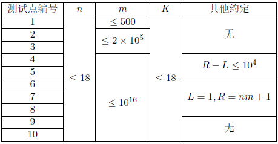

九条可怜最近研究了一下多项式在系数模 $2$ 意义下的性质。她发现可以用多项式在模$2$意义下的乘法得到一个很长的字符串：
对于一个 $n$ 次的系数为 $0$ 或 $1$ 的多项式 $f(x)$，我们在模 $2$ 意义下计算 $g(x) = f(x)^m$，则 $g(x)$ 为一个 $nm$ 次的多项式，它有 $nm + 1$ 个系数，将这些系数从高位到低位写下来，就可以得到一个长度为 $nm + 1$ 的 $01$ 字符串。
例如对于多项式 $f(x) = x^3 + x + 1$，计算 $g(x) = f(x)^3 = x^9 + x^7 + x^6 + x^5 + x^2 + x + 1$，这样我们得到了一个长度为 $10$ 的字符串 $1011100111$。
现在可怜有一个次数为 $n$ 的多项式 $f(x)$，整数 $m, L,R$ 以及一个长度为 $K$ 的 $01$ 串 $t$。令 $s$ 为 $f(x)^m$ 得到的字符串，$s[L,R]$ 为 $s$ 的第 $L$ 个字符到第 $R$ 个字符，可怜想要知道 $t$ 在 $s[L,R]$ 中出现了多少次。
第一行输入一个整数 $T$ 表示数据组数。
每组数据第一行输入五个整数 $n, m,K, L,R$。
第二行输入一个长度为 $n + 1$ 的 $01$ 串表示多项式 $f(x)$ 的系数，其中第 $i$ 位表示 $f(x)$ 的第 $n-i + 1$ 次系数。
第三行输入一个长度为 $K$ 的字符串表示字符串 $t$。
对于每组数据输出一个整数表示答案。
1 3 3 2 1 10 1011 01
2

对于 $100\%$ 的数据，保证 $1\leq T\leq 5$，$1\leq L\leq R \leq nm + 1$。
 Comet OJ
Comet OJ